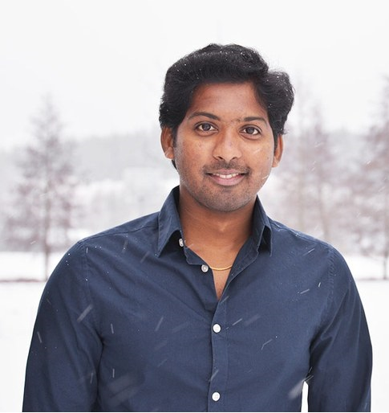

Praghajieeth Raajhen Santhana Gopalan, PhD
Postdoctoral Researcher in Cognitive Neuroscience
University of Jyväskylä, Finland
Tutkijatohtori kognitiivisessa neurotieteessä
Jyväskylän yliopisto, Suomi
Investigating how brain, heart, and breathing rhythms shape attention, learning, and healthy aging.
Tutkin, miten aivojen, sydämen ja hengityksen rytmit vaikuttavat tarkkaavuuteen, oppimiseen ja terveeseen ikääntymiseen.

Rule-Based Learning Study
Sääntöoppimisen tutkimus
Join our cognitive neuroscience study investigating how brain, heart, breathing, and skin signals relate to learning performance.
Tule mukaan kognitiivisen neurotieteen tutkimukseen, jossa selvitetään aivojen, sydämen, hengityksen ja ihon signaalien yhteyttä oppimiseen.
- Healthy adults aged 18–40 years
- Terveet aikuiset 18–40 vuotta
- EEG, ECG, respiration, and electrodermal activity recordings
- EEG-, ECG-, hengitys- ja ihon sähkönjohtavuusmittaukset
- One visit (~70 minutes)
- Yksi käynti (~70 minuuttia)
- University of Jyväskylä, Mattilanniemi 6, 40100 Jyväskylä ↗
- Jyväskylän yliopisto, Mattilanniemi 6, 40100 Jyväskylä ↗
What you will do:
Play an easy computer game while we measure brain and body signals using comfortable non-invasive sensors.
Mitä teet:
Pelaat helppoa tietokonepeliä samalla kun mittaamme aivojen ja kehon signaaleja mukavilla, ei-invasiivisilla sensoreilla.
Participation:
Voluntary and free participation.
Osallistuminen:
Vapaaehtoista ja maksutonta.
Projects
Projektit
Current flagship projects are highlighted below. Earlier completed projects are summarized as a research track record.
Nykyiset päätutkimusprojektit on esitelty alla. Aiemmat projektit on koottu tutkimusuran kokonaiskuvaksi.
2026–Today
2026–
Prediction-based optimization of rule-based learning using multimodal EEG, cardiac, respiratory, and electrodermal signals
Sääntöoppimisen ennustepohjainen optimointi hyödyntäen EEG-, sydän-, hengitys- ja ihosignaaleja
Machine learning + EEG/ECG/EDA • Predicts optimal learning states and adaptive stimulus timing in cognitive training
Koneoppiminen + EEG/ECG/EDA • Ennustaa optimaalisia oppimistiloja ja mukautuvaa ärsykkeiden ajoitusta kognitiivisessa harjoittelussa
2026–Today
2026–
Developmental attention networks: ERP and time-frequency EEG analysis
Kehitykselliset tarkkaavuusverkostot: ERP- ja aika-taajuus EEG-analyysi
128-channel EEG • Revealed age-related neural dynamics of attention using ERP, theta, alpha, and beta oscillations
128-kanavainen EEG • Ikään liittyvien tarkkaavuusprosessien hermodynamiikan tutkimus ERP-, theta-, alfa- ja beetaoskillaatioiden avulla
2026–Today
2026–
Multimodal neurophysiology of spiral drawing and Parkinson’s motor biomarkers
Spiraalipiirtämisen multimodaalinen neurofysiologia ja Parkinsonin taudin motoriset biomarkkerit
280-channel EEG + wearable ECG • Identifies neural, cardiac, and movement markers from spiral drawing, including Parkinson’s disease patient data
280-kanavainen EEG + puettava EKG-laite • Tunnistaa hermostollisia, sydänperäisiä ja liikkeeseen liittyviä markkereita spiraalipiirtämisestä, sisältäen Parkinson-potilasaineiston
2024–2026
2024–2026
Personalised cardiorespiratory timing enhances sensory neural responses during associative learning
Yksilöllinen sydän- ja hengitysrytmin ajoitus vahvistaa sensorisia hermovasteita assosiatiivisen oppimisen aikana
128-channel EEG + ECG + respiration • Enhanced sensory neural responses through physiology-timed learning cues
128-kanavainen EEG + ECG + hengitys • Fysiologisesti ajoitetut oppimisvihjeet vahvistivat sensorisia hermovasteita